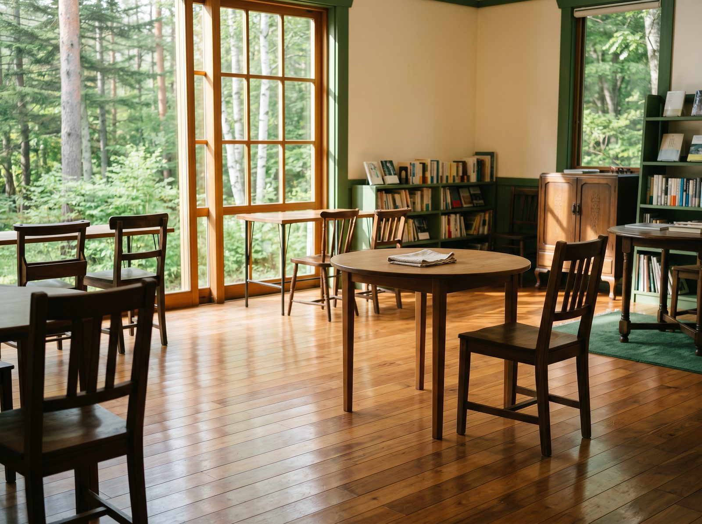
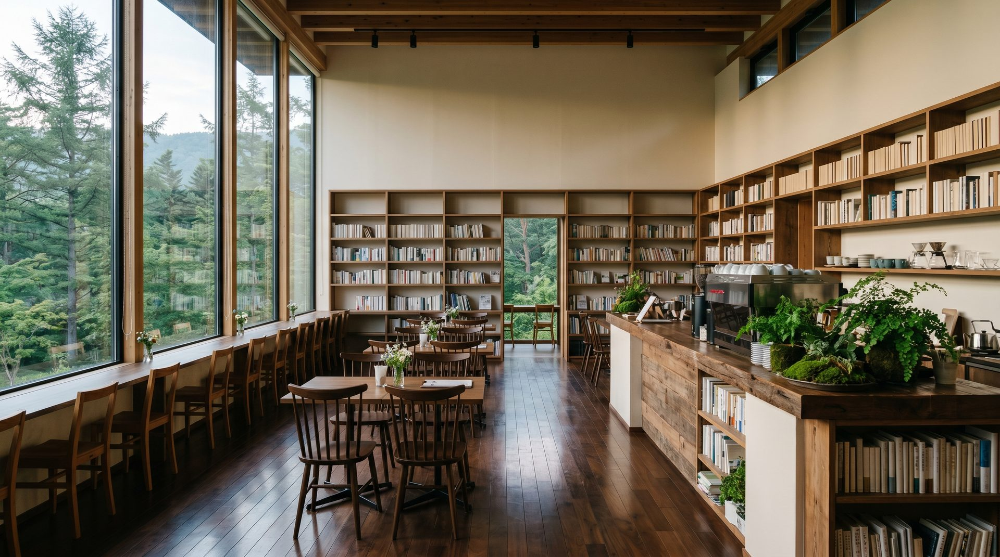

Cleaning — Service 02
軽井沢T-SITEなど、長野県内の現場で。AIを連れて、毎週入っている。

代表の照井が現場に入り、crew と一緒に動く。
個人事業だから、小回りが効く。大手に頼みづらい、細かい依頼にも応えられる。

清掃の現場には、報告書・シフト調整・備品発注・予約対応など、机の上の仕事が思いのほか多い。これをAIに任せると、現場で動く時間が戻ってくる。
たとえば新人教育。以前は紙のマニュアルと立ち会いで時間がかかっていたものを、いまはスマホ1台で、現場の動きを動画とチェックリストで自学自習。
予約・返信対応も、AIに集約してほとんど手をかけずに回せる（ロビンソン（washdeli）での実績）。
現場とAI、両方を知っているから、現場で本当に効く形を選べる。
長野県内の清掃事業者向けに、現場の事務作業をAIで楽にする手順を集めました。
面積・頻度・作業内容で見積もります。定期清掃・スポット清掃・イベント時対応など、柔軟に組みます。
まずはお問い合わせください。現場を見せていただいてから、お見積りします。料金は、相談の中で。

予約・返信対応の手作業が、ほぼなくなりました。
「IT系は苦手意識があったが、わかりやすく体系立てて説明してくれて、無理なく取り組めました。」